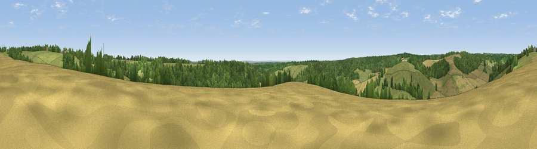

Viewpoint near Fawley
#30479 in England · top 24% of its area beats it · near FawleyWhere it is
The exact computed spot (SU 74075 87075). Click the marker for map links.
The view, rendered

A 360° render of this exact spot computed from the terrain model, tree cover and land cover — summer colours, afternoon light, calibrated against photographs of famous viewpoints. Real trees, hedges and buildings will differ in detail.
The panorama
Grey silhouette: terrain skyline in each direction (720 bearings, Earth curvature and refraction included). Dashed green: skyline with trees (+15 m) and buildings (+8 m) as obstacles. Blue strip: how far the ground is visible on each bearing.
Where the view opens
Wedge length = distance to the farthest visible ground on that bearing (vegetation-aware). Rings at 10, 25 and 50 km.
What fills the view
40% grassland · 33% cropland · 27% woodland
Angular shares of the visible panorama (visual magnitude), not map area. Landscape diversity 0.48 (0–1 Shannon).
Key numbers
More beautiful places nearby
The staircase of upgrades: each row has a higher view potential than everything closer. Driving times are estimates from straight-line distance, calibrated against real road routing — check an actual route before setting out.
| Place | Direction | Drive | Score |
|---|---|---|---|
| Viewpoint near Fawley | N · 1 km | ~3 min | 48.8 |
| Viewpoint near Cookley Green | NW · 7 km | ~15 min | 68.5 |
| Viewpoint near Watlington | NNW · 8 km | ~15 min | 70.6 |
| Viewpoint near Lewknor | NNW · 9 km | ~17 min | 70.8 |
| Viewpoint near Lewknor | N · 10 km | ~20 min | 74.4 |
| Coombe Hill Monument | NNE · 22 km | ~37 min | 75.5 |
| Beacon Hill | SW · 41 km | ~61 min | 76.7 |
| Martinsell viewpoint | WSW · 61 km | ~83 min | 76.9 |
51.57768, -0.93243 · source: screening · position refined by local search. Computed location — check access rights before visiting.